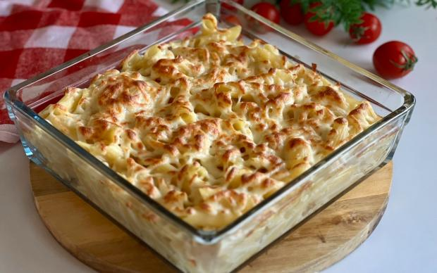
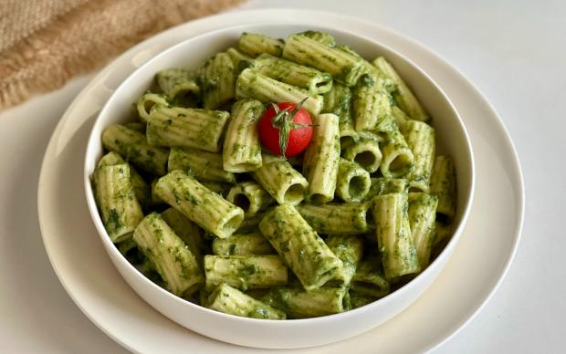
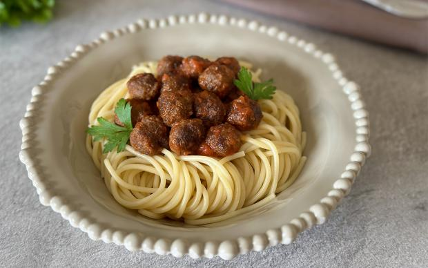
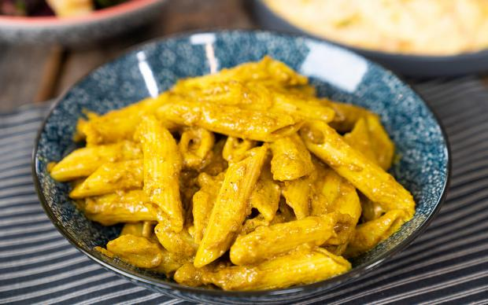
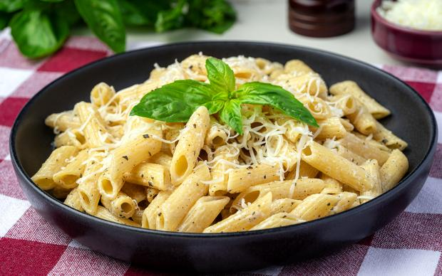
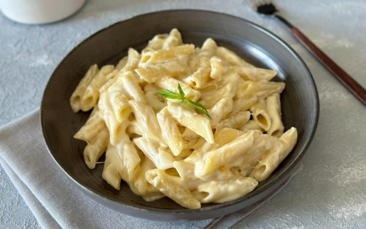

Kremalı ve lezzetli bir sosla makarna.

Sağlıklı ve lezzetli ıspanaklı makarna.

Köfte ve makarnanın birleşimi.

Baharatlı ve kremalı makarna.

Yumuşak ve kremsi bir makarna.

Peynir ve penne makarna uyumu.